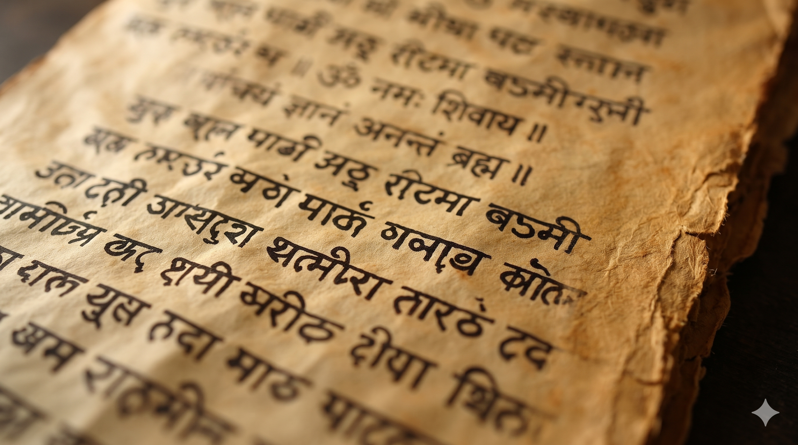

The Witness
Thoughts, sensations, and experiences are known. The teaching invites inquiry into that which knows them—the witnessing awareness.
A journey into the uncompromising non-dual wisdom of Sage Ashtavakra—where freedom is not something to become, but something to recognize.
The Ashtavakra Gita speaks from the standpoint of Advaita: the deepest Self is not separate from reality, and freedom is not produced by changing what you are.
Thoughts, sensations, and experiences are known. The teaching invites inquiry into that which knows them—the witnessing awareness.
At the deepest level, the division between a separate “me” and the whole is questioned. Reality is described as one, not two.
The Self is presented as untouched by changing states. Dispassion means seeing clearly, not suppressing life or emotion.
Liberation is framed as recognition of an ever-free nature—not a future achievement owned by the ego.
A philosophical summary of the text—not a substitute for reading its verses in context.
How is knowledge to be acquired? How is liberation to be attained? How does dispassion arise?
The king’s question begins the dialogue that runs through all twenty chapters.
You are not merely what can be observed. Know yourself as the awareness that witnesses.
Paraphrase of the opening instruction. Translation wording differs across editions; consult a chosen translation for exact verse language.
What changes—and what is aware of change?
Notice a thought arrive and pass. Notice a feeling shift. The text points toward the knower rather than asking the seeker to collect another experience.
Textual grounding: Ashtavakra Gita, Chapter 1; the dialogue is traditionally presented between Ashtavakra and Janaka. Read Chapter 1 ↗
A traditional chapter-by-chapter reading map. Open a chapter to see its central theme. The summaries are concise study notes, not literal translations.
The text is commonly presented in 20 chapters. Verse counts and transliteration can vary by edition. Chapter themes are summarized from published chapter synopses. Chapter synopsis source ↗

Ashtavakra is a revered sage associated with the Advaita tradition. His name is traditionally explained as “bent in eight places,” referring to the story of his body.
In the Mahabharata tradition, he enters King Janaka’s court and is remembered for his wisdom and debate. The story points toward a central insight: bodily appearance does not define the truth of a person.
Historical and textual details are presented cautiously; traditions and editions differ. Read the translator’s introduction
For a few breaths, do not try to improve the moment. Notice sound, sensation, and thought as they appear. Then ask gently: what is aware of all this?